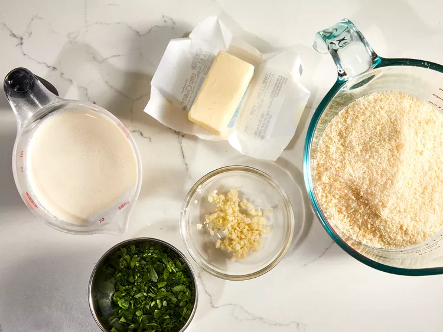

Show Stopping Alfredo Sauce
MOUTH-WATERING ALFREDO SAUCE WITH PARMESAN AND PARSELY

Utilizing this recipe, you will uncover the wonder of dairy, and it's many use-cases!
Ingredient List:
- 1/4 cup butter
- 1 cup heavy cream
- 1 1/2 cups freshly grated Parmesan cheese
- 1 clove garlic, crushed
- 1/4 cup chopped fresh parsely
Steps to Make:
- Gather all ingredients.

- Melt butter in a medium saucepan over low heat. Stir in cream and simmer for 5 minutes.

- Add cheese and garlic; whisk continuously until heated through. Stir in parsely and serve.
- Serve immediately and enjoy!